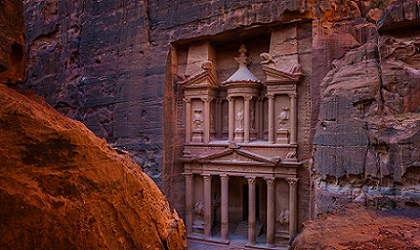
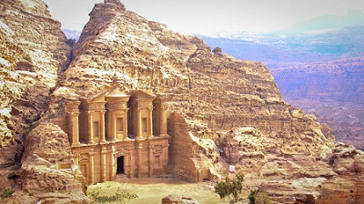
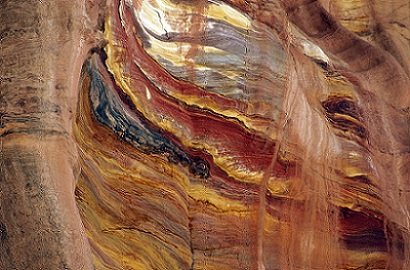

Petra
Petra (en griego antiguo, Πέτρα, en árabe, البتراء al-Batrā´) es un importante enclave arqueológico en Jordania, y la capital del antiguo reino nabateo, cuyos pobladores la llamaban Raqmu (en árabe nabateo, الرقيم). El nombre de Petra proviene del griego πέτρα que significa piedra, y su nombre es perfectamente idóneo; no se trata de una ciudad construida con piedra sino, literalmente, excavada y esculpida en la piedra.
El asentamiento de Petra se localiza en un valle angosto, al este del valle de la Aravá que se extiende desde el mar Muerto hasta el Golfo de Aqaba. Los restos más célebres de Petra son sin duda sus construcciones labradas en la misma roca del valle (hemispeos), en particular, los edificios conocidos como el Khazneh (el Tesoro) y el Deir (el Monasterio).
Fundada en la antigüedad hacia el final de siglo VIII a. C. por los edomitas, fue ocupada en el siglo VI a. C. por los nabateos que la hicieron prosperar gracias a su situación en la ruta de las caravanas que llevaban el incienso, las especias y otros productos de lujo entre Egipto, Siria, Arabia y el sur del Mediterráneo.


Redescubrimiento
Hacia el siglo VI d. C., el cambio de las rutas comerciales y los terremotos sufridos, condujeron al abandono de la ciudad por sus habitantes. Cayó en el olvido hasta que en 1812 el lugar fue redescubierto para el mundo occidental por el explorador suizo Jean Louis Burckhardt (1784-1817).
Numerosos edificios cuyas fachadas están directamente esculpidas en la roca, forman un conjunto monumental único, que a partir del 6 de diciembre de 1985 está inscrito en la Lista del Patrimonio Mundial de la Unesco. La zona que rodea el lugar es también, desde 1993, Parque Nacional arqueológico. Desde el 7 de julio de 2007, Petra forma parte de las nuevas siete maravillas del mundo moderno.
Geología
Petra es una ciudad de origen nabateo situada en medio de acantilados rocosos, rocas y piedras se ven por todas partes. El lugar está compuesto de arenisca, una roca detrítica formada a partir de la agregación y cementación o diagénesis de los granos de arena. Es, por lo tanto, una roca coherente y dura, estas características geológicas permitieron a los habitantes de Petra poder ocultarse y protegerse de los ataques externos.
Petra está situada en una región con una fuerte sismicidad: se encuentra donde la Placa arábiga se separa de la Placa África. La sismicidad del sitio se ve reforzada por la proximidad del Gran Valle del Rift. En los años 363, 419, 551 y 747, varios terremotos dañaron la ciudad y sus monumentos. La capa freática de agua salada existente debajo de Petra ascendió y produjo el deterioro de la base de muchos monumentos. Alrededor de Petra, se pueden encontrar rocas que contienen sílice, que los nabateos fueron capaces de extraer en las canteras para fabricar hormigón resistente al agua.
